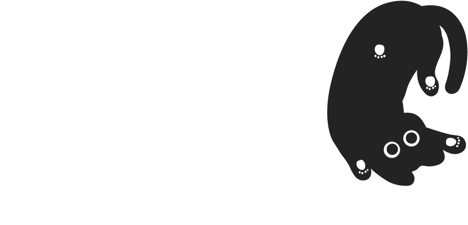
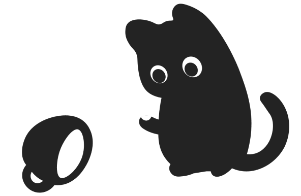

История рассказывает нам
о похождениях беспечного
кота, несправедливости,
которая может неожиданно
повстречать каждого
на улице и смелости
некоторых прохожих.
А также о перевоплощении
страхов и неуклюжести
в осознанность и стойкость.


Герои
В главных ролях... Неуклюжий
кот — кот,
смелый ворон — ворон,
группировка хулиганов —
уличные голуби.